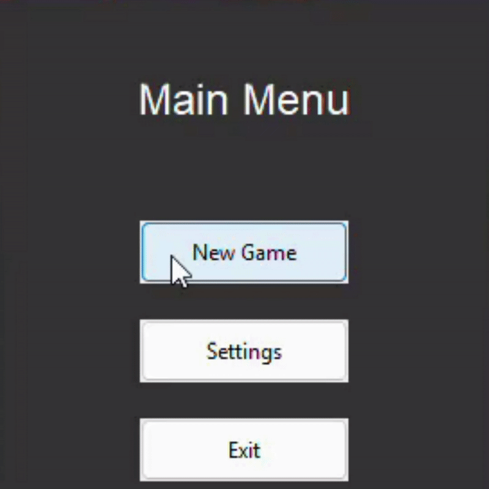
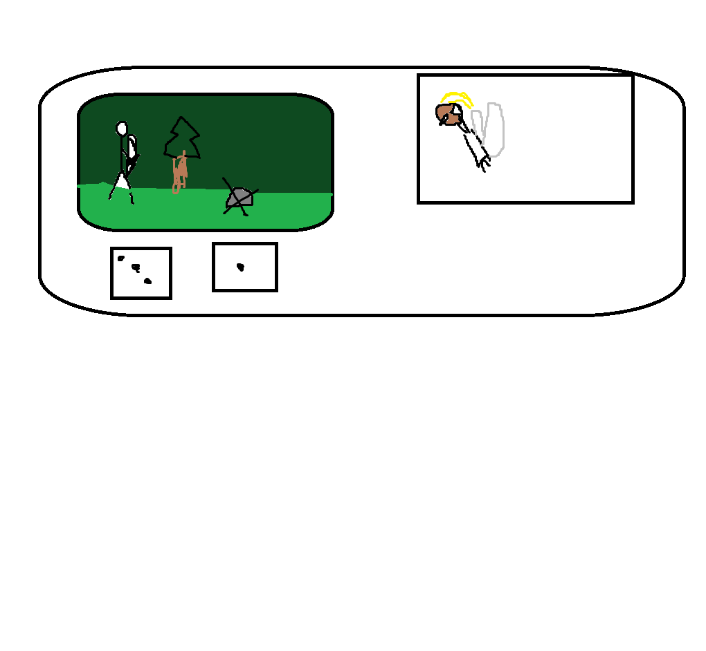
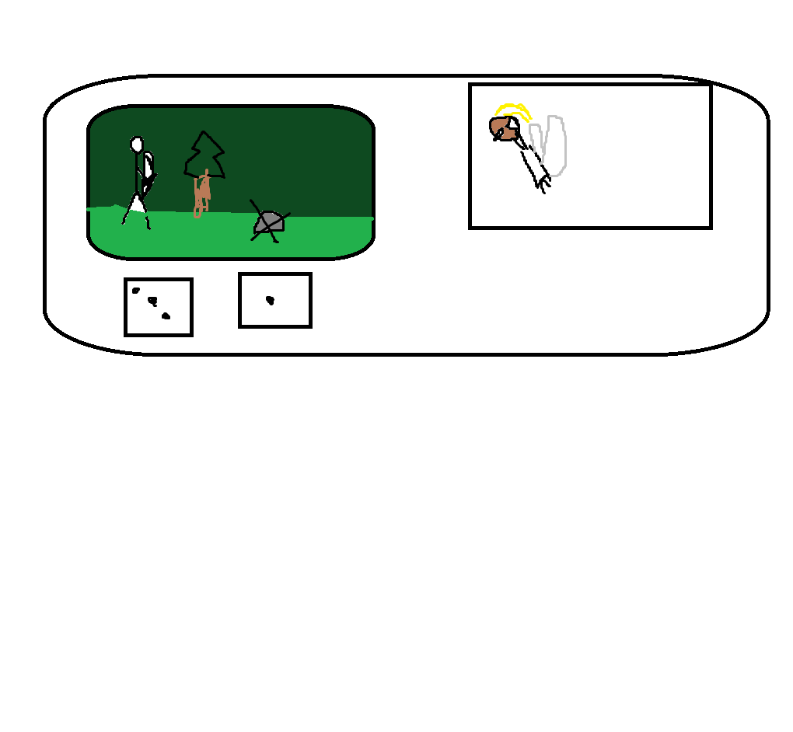
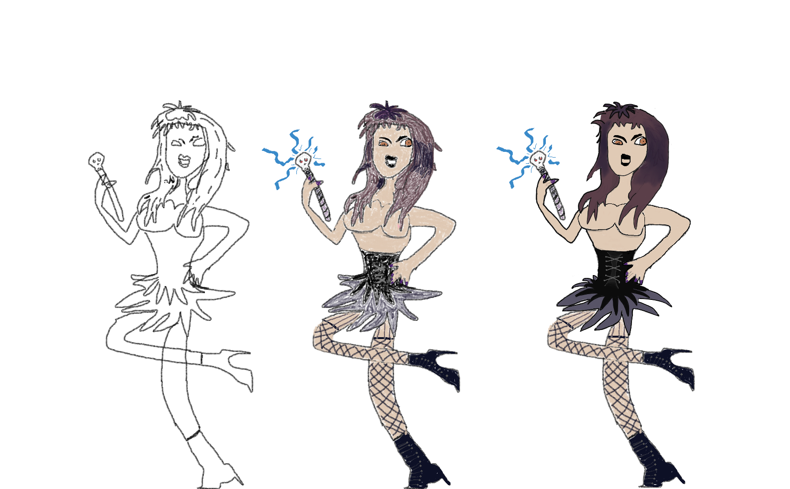
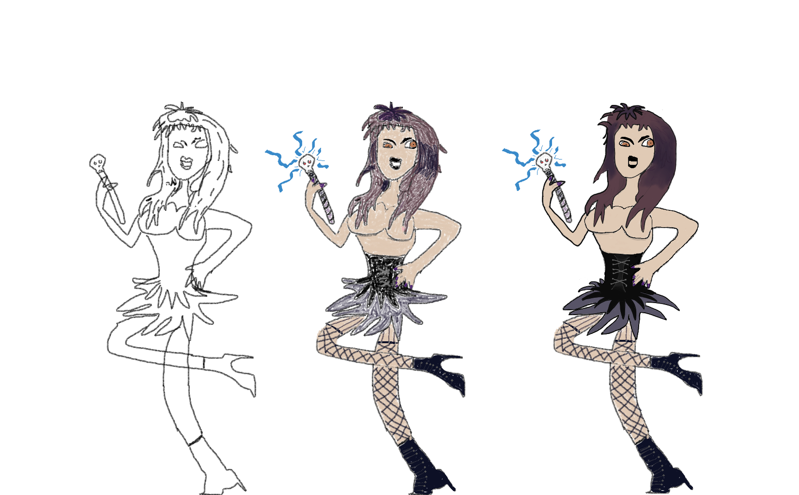

Python Schulprojekt
Eigentlich sollte es einfach sein und im terminal bleiben.
Nö.
War zu einfach. Also haben Ich an einem Abend das Project mit Tkinter gebaut.

War immer noch zu einfach
Concept Art time juhuu
 

 

Ja ich weiß, ich habe talent.
Die restlichen bilder sind per hand gezeichnet, KI generiert oder aus dem Internet geliehen.


Endversion.
Bonus: der kleine Goblin der es nicht ins game geschafft hat.
-
Features:
- GUI mit Pygame
- Zufällig abgespielte Sounds
- Gegner werden mit Json-Dateien
- Animationen
- Music player welcher zufällige .ogg dateien im ordner abspielt
- Bosskampf mit 3 Phasen
- KI generierte Intro / Outro Szenen
- Eine herzerreißende Geschichte
- Die herzerwärmende Stimme von niko bellic
- Zensierte Inhalte
- Handgezeichnete Kunstwerke
- Kleine Bugs
music von: https://www.youtube.com/@ALOUTOULOU und andere sachen